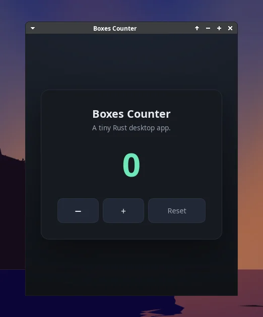
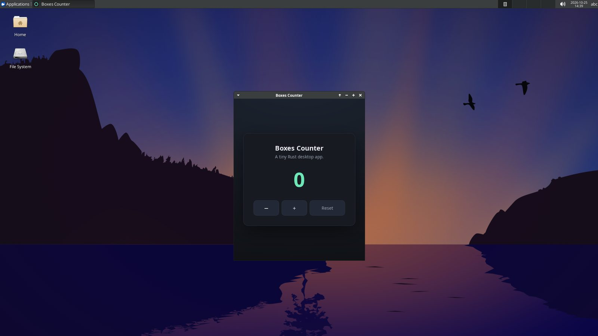

Computer use
Agents open GUI apps on the box desktop and take screenshots to check what they built.
Linux desktops where AI agents do real work, and locked-down sandboxes for code you don't trust. Self-hosted on one VPS you own.


Agents open GUI apps on the box desktop and take screenshots to check what they built.
Lock the network to deny-all or an allowlist, set a run limit, and roll back to any snapshot.
Install on your VPS. One script sets up the server, HTTPS and Docker.
Create a box. From the CLI, the dashboard or the HTTP API.
Hand it to your agent. Claude Code, Codex, OpenCode, Pi and Kimi come preinstalled.
Drive every box from your terminal, or automate it from your own code.
Read the docspaddock new --ttl 3600 --network deny-all --tag task=run-tests
paddock exec current -- npm test
paddock screenshot current -o shot.png
paddock delete current --yesCreate boxes, open their desktops and watch agents work, from your browser.
An HTTP API with TypeScript and Python SDKs, webhooks and API keys.
An Ubuntu XFCE desktop you open with paddock desktop. Run GUI apps on it with paddock exec --desktop and capture it with paddock screenshot.
Docker runs inside the box, through Sysbox.
Saved every minute and on stop. Stop, resume, fork, or roll back to a snapshot with paddock restore.
Allow all, deny all, or an allowlist of domains and CIDRs, changeable on a running box. Cloud metadata is always blocked.
Folders under /mnt that outlive the boxes using them. A drive mounts read-write into one box at a time, or read-only into many.
Isolated Linux users with private homes, and shared group folders under /shared.
Claude Code, Codex, OpenCode, Pi, Prime and Kimi are preinstalled. Send a task with paddock prompt.
SSH and scp into the box, and public HTTPS URLs for its ports with paddock host.
A dashboard, an HTTP API, TypeScript and Python SDKs, webhooks, and API keys.
Run this on an Ubuntu or Debian VPS with ports 80 and 443 open. Use your own domain, or <your-ip>.sslip.io.
curl -fsSL https://raw.githubusercontent.com/tony1908/paddock/main/install/install.sh \
| sudo bash -s -- \
--domain paddock.example.com --email you@example.comThen install the CLI and the agent skill on your laptop.
curl -fsSL https://paddock.example.com/install/cli.sh | sh
paddock login --server https://paddock.example.com --email you@example.com
paddock skill installOr download the CLI from GitHub Releases.
Full install guide